La búsqueda A* emplea una función matemática a fin de seleccionar el camino que tenga el menor coste posible. Esta función se define de la siguiente forma (De la Fuente López, 2010).:
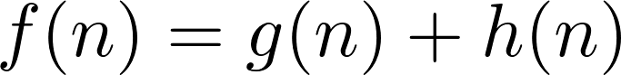
Donde:
- f(n) = es el estimador del camino de menor coste (considerado desde el estado inicial hasta un nodo meta pasando por el nodo n).
- g(n) = es el coste del camino real hasta el nodo n.
- h(n) = es la estimación del coste de llegar a un estado meta desde el nodo n.
En esta línea, es importante definir lo siguiente (Ertel, 2017):
Definición:
Una función heurística de estimación de coste h(n), que nunca sobreestima el coste actual del estado n al estado meta, recibe el nombre de "admisible".
Por lo tanto, la función heurística junto con la función de evaluación f(n) y una heurística admisible h(n) recibe el nombre de algoritmo A*. Se debe destacar que este algoritmo es completo y óptimo, es decir, siempre encontrará el camino más corto para cualquier problema que tenga solución siempre y cuando está bien definida la función h(n).
Cómo definir la función heurística
En el caso de la función g(n) se puede calcular sin inconveniente, sin embargo, ¿cómo se procede en el caso de la función f(n)? Para ello, tenemos dos opciones (Geeks for Geeks, 2018b):
- Calcular el valor exacto de h(n), lo cual será muy costoso de llevar a cabo, o
- Aproximar el valor de h(n) usando alguna heurística.
Para ilustrar la idea, emplearemos el ejemplo del laberinto, donde un agente busca ir de un punto de partida (celda definida por dos coordenadas "x" y "y") a un punto de llegada dado. Como se puede apreciar en la siguiente ilustración, debemos ir de la celda marcada con la letra "I" (inicio) a la celda marcada con la letra "M" (meta). En este caso, podemos usar dos métricas distintas que buscan aproximar el coste h(n):
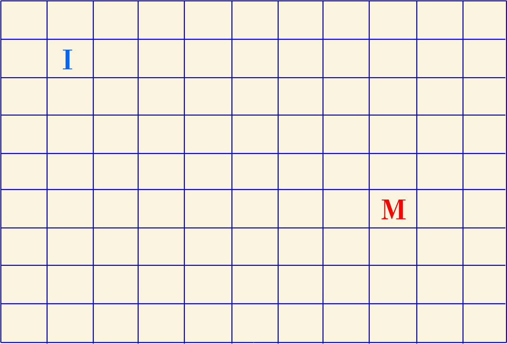
- Distancia Manhattan:
- Se calcula como la suma del valor absoluto de las diferencias de las coordenadas "x" y "y" de los puntos de partida y de llegada (o meta). Para ello, se aplica la siguiente fórmula:
- 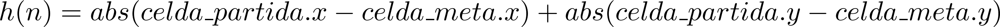
- En la siguiente ilustración donde "I" es el estado de partida (1, 1) y "M" es el estado meta (5, 8), podemos observar un ejemplo de lo que representa la distancia Manhattan:
- 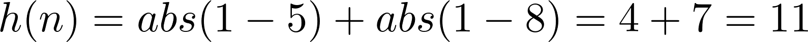
- Como se aprecia, se tendría 11 casilleros desde el inicio hasta la meta (considerando el último paso):
- 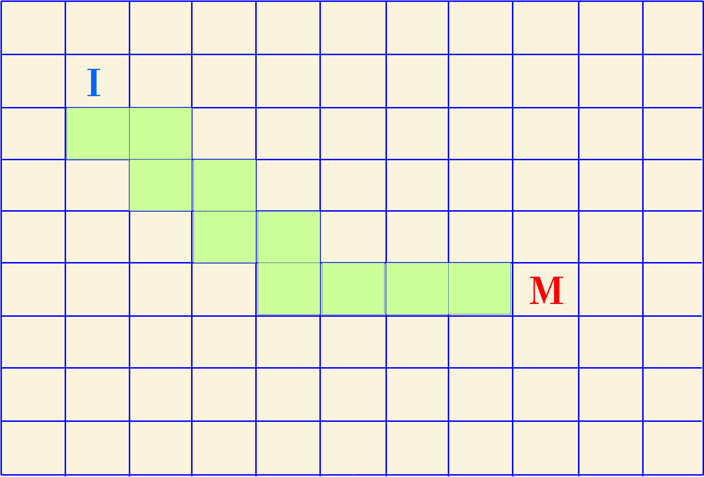
- ¿Cuándo debemos usar esta heurística? Se debe emplear cuando solo podamos movernos en las direcciones arriba, abajo, izquierda, derecha.
- Distancia Diagonal:
- Representa el máximo de las diferencias absolutas de las coordenadas "x" y "y" de los puntos de partida y de llegada (o meta). Para ello, se aplica la siguiente fórmula:
- 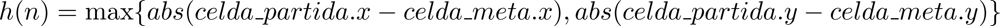
- En la siguiente ilustración donde "I" es el estado de partida (1, 1) y "M" es el estado meta (5, 8), podemos observar un ejemplo de lo que representa la distancia Diagonal:
- 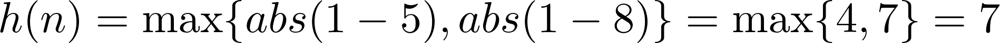
- Como se aprecia, se tendría 7 casilleros desde el inicio hasta la meta (considerando el eje mayor, que en este caso es "y"):
- 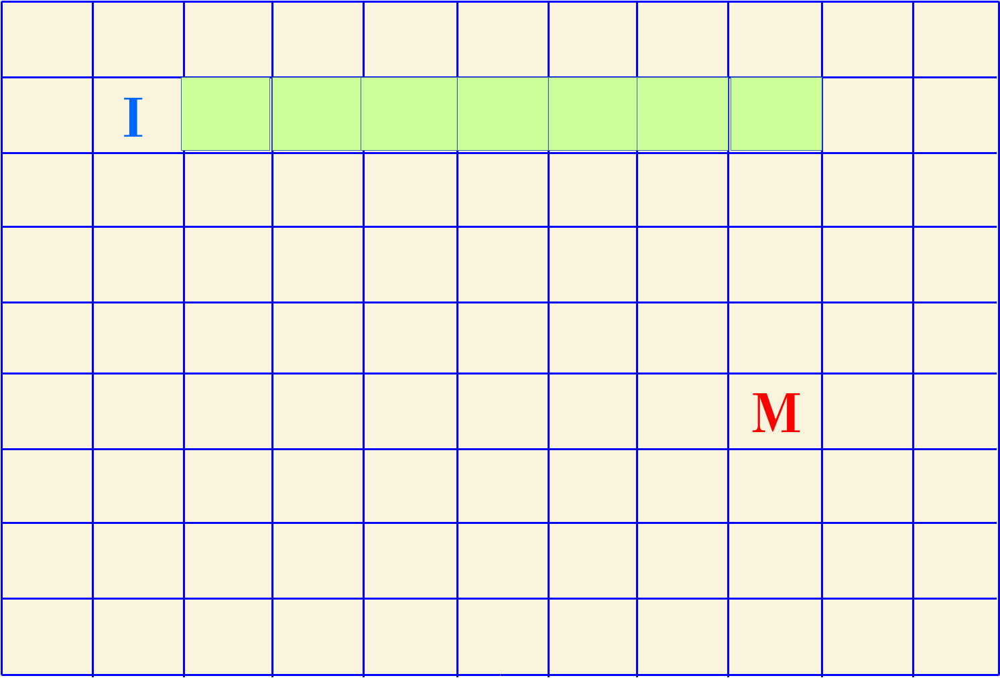
- ¿Cuándo debemos usar esta heurística? Se debe emplear cuando solo podamos movernos en 8 direcciones (similar a cómo se mueve el caballo en el Ajedrez) (Geeks for Geeks, 2018b).
- Distancia Euclídea:
- Consiste en estimar la distancia en el punto de partida y el de llegada empleando una fórmula similar a la propuesta por Pitágoras:
- 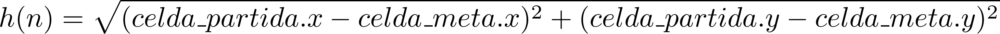
- En la siguiente ilustración donde "I" es el estado de partida (1, 1) y "M" es el estado meta (5, 8), podemos observar un ejemplo de lo que representa la distancia Euclídea:
- 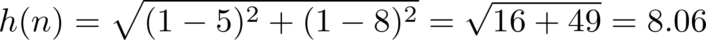
- Como se aprecia, se tendría aproximadamente 8 casilleros desde el inicio hasta la meta:
- 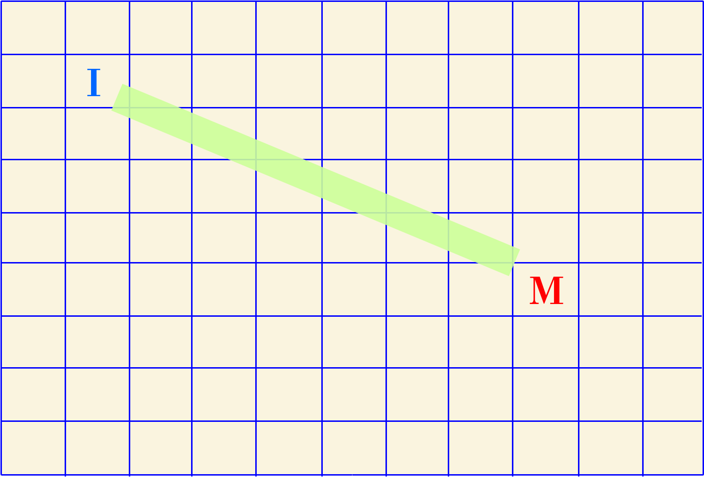
- ¿Cuándo debemos usar esta heurística? Se debe emplear cuando podamos movernos en cualquier dirección (Geeks for Geeks, 2018b).
A fin de ilustrar cómo se realiza el proceso de búsqueda con este algoritmo, vamos a usar como ejemplo el siguiente grafo, donde se ha colocado las distancias entre los nodos de acuerdo a los criterios que se detallan a continuación:
- Con color negro tenemos la distancia entre dos nodos datos. Por ejemplo, la distancia entre el nodo "A" y "B" es de 3 unidades. Estos valores representan el valor que devuelve la función g(n).
- Con color rojo y dentro de los rectángulos se puede apreciar la distancia estimada del nodo a la meta "M" señalada con color verde. Por ejemplo, la distancia estimada del nodo "A" a la meta es de 7 unidades. La distancia estimada del nodo "F" a la meta es 0.5. Estos valores representan el valor que devuelve la función h(n) del algoritmo.
- Finalmente, la distancia estimada del nodo "M" a la meta es (a sí mismo) es 0.
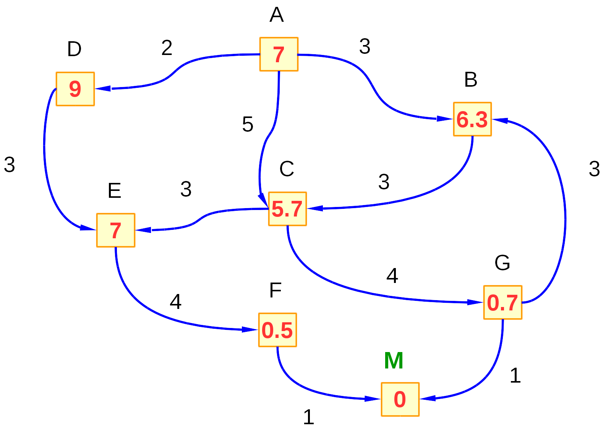
En los siguientes pasos vamos a buscar el camino con el menor coste posible hasta la meta "M". Es importante señalar que este algoritmo trabaja de forma similar a la búsqueda por Coste Uniforme, ya que emplea una Cola para colocar los nodos a visitar de acuerdo al valor que devuelve la función f(n). Del mismo modo, se utiliza una lista con los nodos ya visitados. Con ello, colocará en la Cola ordenados por menor coste los nodos que irá expandiendo y el nodo de partida en la lista de visitados.
- Como primer paso, determinamos las acciones (caminos) que se pueden tomar desde el nodo de partida "A" hacia los demás nodos. Con ello, podemos movernos a los nodos "D", "B" y "C" con los siguientes costes:
- Coste de ir por el nodo "D" => f(D) = g(n) + h(n) = 2 + 9 = 11.
- Coste de ir por el nodo "B" => f(B) = 3 + 6.3 = 9.3
- Coste de ir por el nodo "C" => f(C) = 5 + 5.7 = 10.7
- Con ello, agregamos esos nodos a la cola de acuerdo a su coste y visitaremos el que tenga menor coste (en este caso "B"):
- Cola = {B (9.3), C(10.7), D(11)}
- Visitados = {A (12) }
- 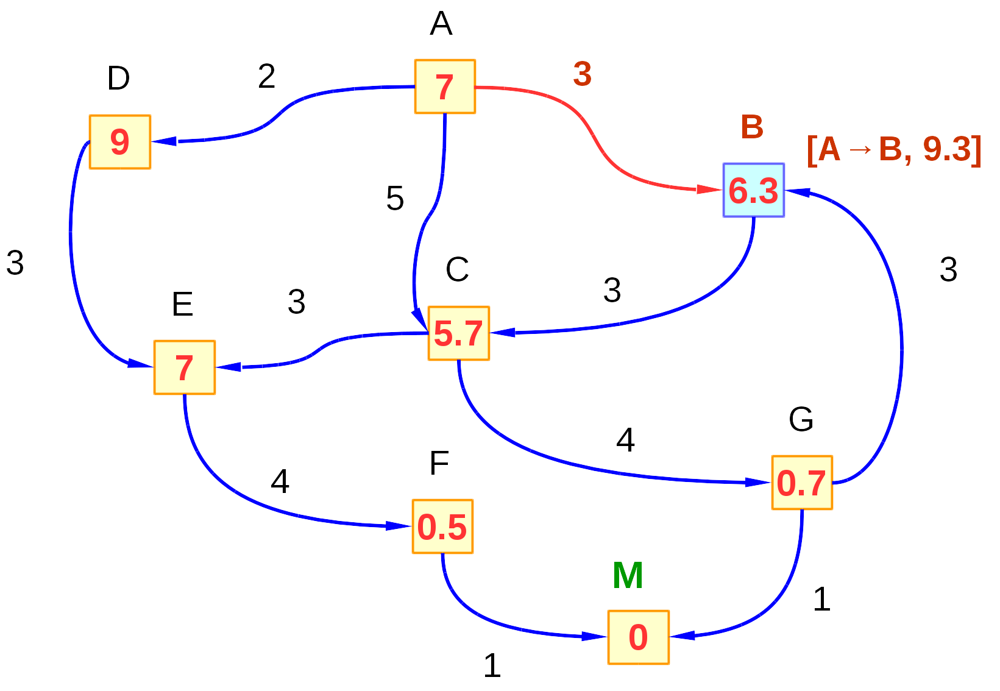
- Ahora pasamos a analizar a qué nodos podemos ir a partir del nodo "B". Aquí tenemos 1 sola opción (ya que el camino al nodo "G" es en sentido inverso, y no podemos llegar a dicho nodo desde "B"). Con ello, tenemos que lo siguiente: Coste de ir al nodo "C" a través de "B": f(C) = (3+3) + 5.7 = 11.7. Este coste es igual a 11.7 porque no debemos olvidar que la función g(n) calcula el coste real del nodo de partida al nodo dado, con ello, para llegar del nodo "A" al nodo "C" debo primero a "B" que tiene un coste de 3, y luego al nodo "C" que tiene un coste de 3 también. Agregamos a la cola el nuevo nodo y marcamos como visitado al nodo "B" (luego de comprobar que no es nodo meta):
- Cola = {C(10.7), D(11), C(11.7)}
- Visitados = {A (12), B(9.3) }
- Como podemos apreciar, el camino más corto es ir por el nodo "C", por lo tanto escogemos esa opción:
- 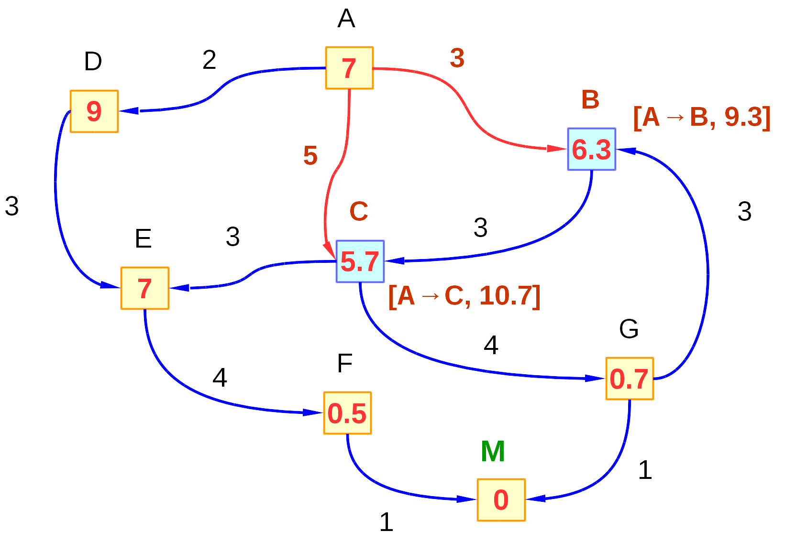
- Desde el nodo "C" tenemos 2 posibles caminos, uno nos lleva al nodo "E" con un coste f(E) = (5+3) + 7 = 15 y el otro camino que nos lleva al nodo "G" con un coste f(G) = (5+4) +0.7 = 9.7. Agregamos estos nodos sucesores en la cola y marcamos al nodo "C" como visitado (una vez verificado que no es nodo meta):
- Cola = {G(9.7), D(11), C(11.7), E(15) }
- Visitados = {A (12), B(9.3), C(10.7) }
- Como podemos apreciar, el camino más corto es ir por el nodo "G", por lo tanto escogemos esa opción:
- 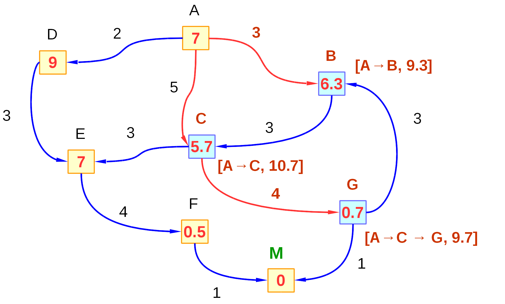
- Desde el nodo "G" podemos visitar el nodo "M" (que es meta) únicamente. Para ello, determinamos el coste de llegar al mismo: f(M) => (5+4+1)+0 = 10. Colocamos este nodo en la Cola y marcamos al nodo "G" como visitado (una vez verificado que no es nodo meta):
- Cola = {M(10), D(11), C(11.7), E(15) }
- Visitados = {A (12), B(9.3), C(10.7), G(9.7) }
- Como podemos apreciar, el camino más corto es ir por el nodo "G", por lo tanto escogemos esa opción:
- 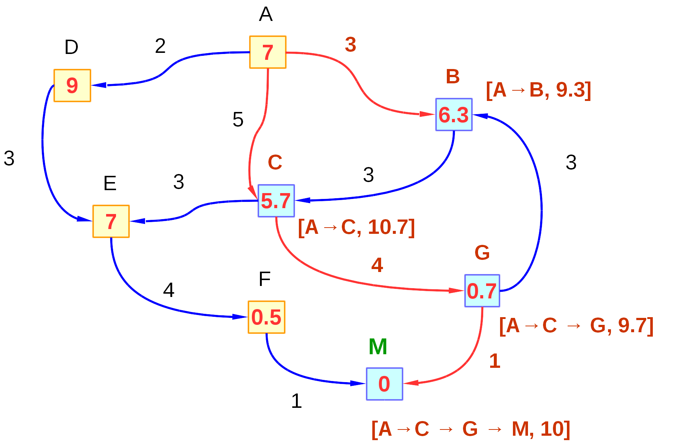
- Como podemos observar en la lista, tenemos que el camino al nodo "M" es el más corto, pero dado que es un nodo meta, devolvemos como resultado la ruta que se debe recorrer:
- Ruta = {A, C, G, M}
- También podemos observar que el coste real ha sido de 10 unidades.